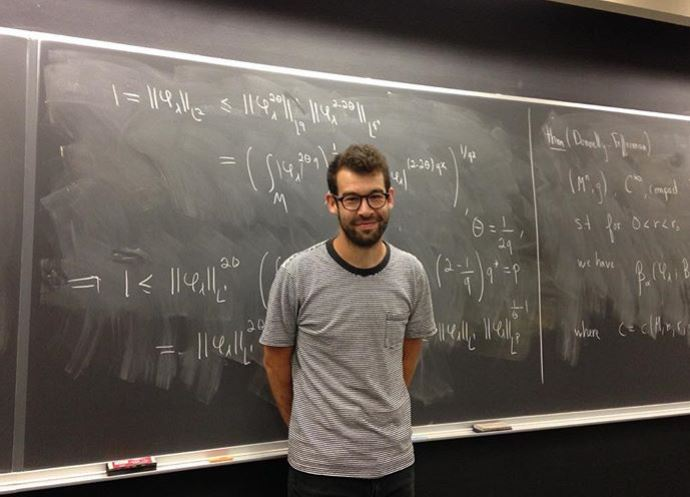

Français · English

Guillaume Roy-Fortin
Je suis professeur enseignant en mathématiques à l'École de technologie supérieure.
Auparavant, j'ai été professeur adjoint Ralph Boas au département de mathématiques à Northwestern. En 2015, j'ai complété mon Ph.D. à l'Université de Montréal sous la généreuse supervision de Iosif Polterovich.
guillaume.roy-fortin at etsmtl.ca
Curriculum Vitae
Nouveau, automne 2026
Séminaire de mathématiques et IA
Recherche
Mes intérêts de recherche se déclinent dans deux directions générales.
Tout d'abord, j'étudie les fonctions propres d'opérateurs elliptiques sur des variétés riemanniennes, notamment les propriétés de leur ensemble nodal.
Par ailleurs, je m'intéresse également aux aspects mathématiques qui sous-tendent l'apprentissage machine.
Cours MTI881 : Aspects mathématiques de l'apprentissage profond
J'ai construit un cours gradué portant sur différents thèmes mathématiques qui jouent un rôle en apprentissage machine. Les notes de cours sont disponibles ici et les exercices avec solutions ici.
Ces documents sont encore en construction et vous pouvez signaler toute erreur ou typo en m'envoyant un courriel à l'adresse indiquée ci-haut.